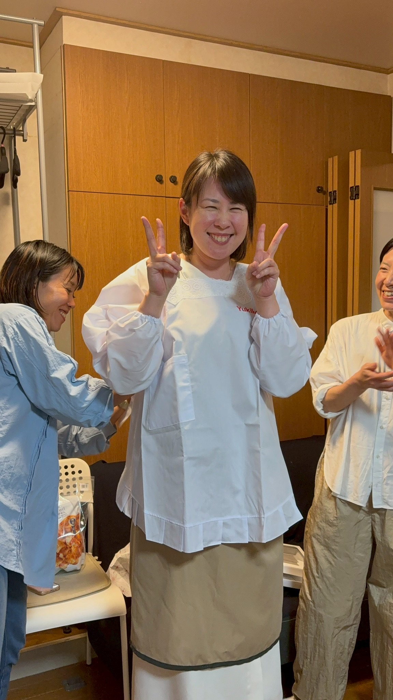
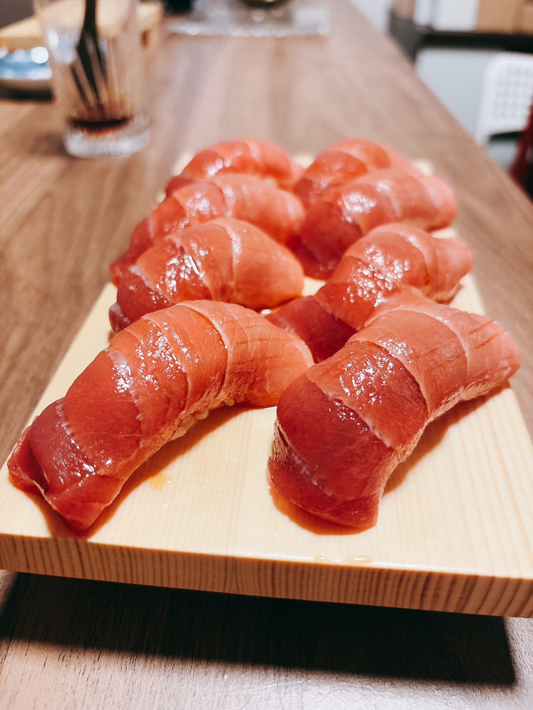
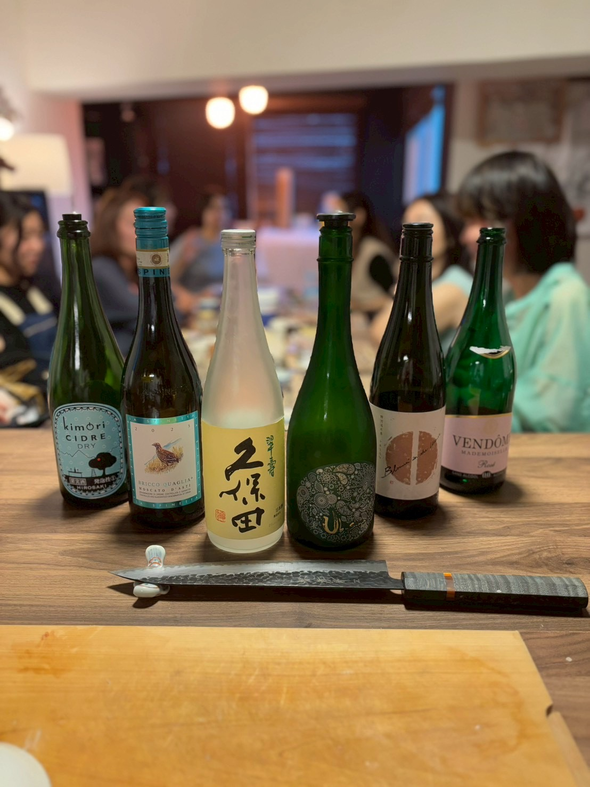

＼ 昨年の生誕祭の様子 ／

🌸 4月29日（水・祝）16:00〜21:00
📍 優【You】BASE 原宿サロン

自宅に年間のべ700人が集まる"帰ってきたくなる場所"を育てた究極の人たらし。原宿のプライベートサロン「優【You】BASE」で、人と人が自然につながる居場所を作ってきた、鮨まさやを支える女将。大の日本酒好き。
13年間の会社員生活を経て、未経験から鮨の世界へ。"鮨は最上級のコミュニケーションツール"を軸に、紹介だけで満席が続く「鮨まさや」を主宰。今回は主役の優喜子とゲストの皆様のために、とびきりの「握り」を披露します。

鮨まさや大将＆弟子による握り鮨。
※18:00頃〜スタート！
握りたてを食べたい方はこの時間に。
優喜子お手製の料理をたくさんご用意します。ホッとする味をお楽しみに。

日本酒・ワイン・リキュールなど。今年は特別な希少酒もご用意しています！
直前の滑り込み参加も大歓迎！食材準備のためお早めに🍣
参加を申し込む